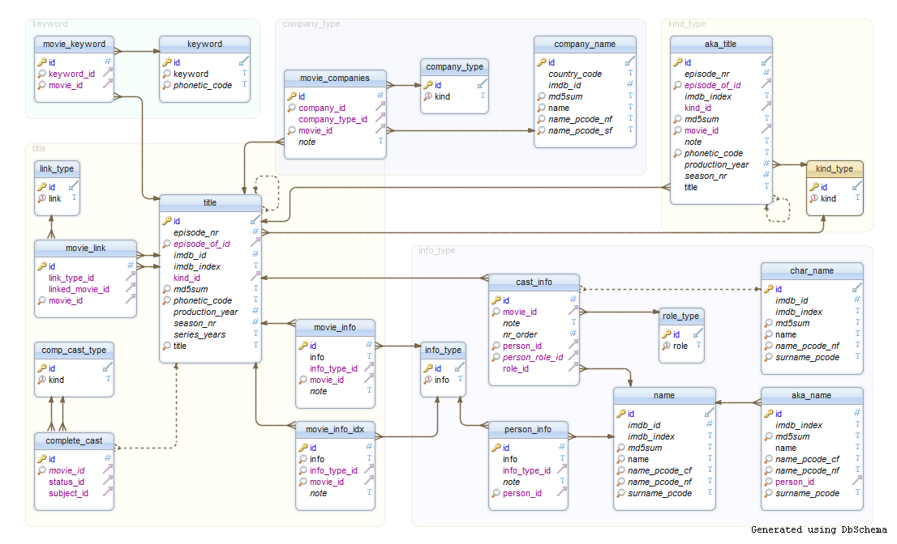
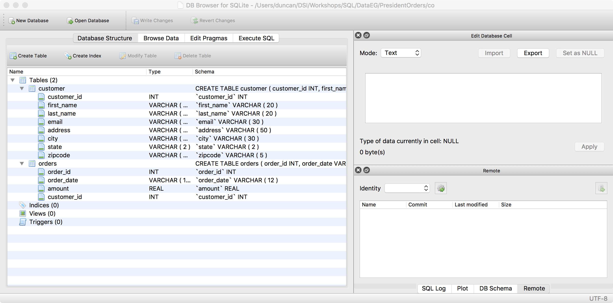
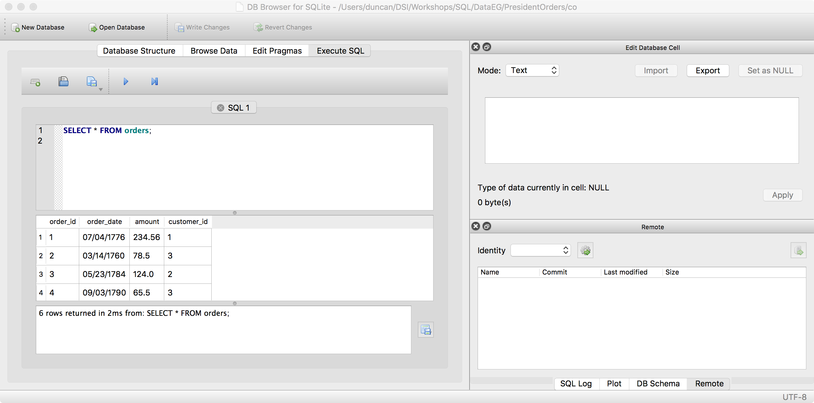

class: center, middle # SQL in R ## [https://github.com/dsidavis/SQLinR](https://github.com/dsidavis/SQLinR) ### Duncan Temple Lang <div style="clear: both"/> <!-- <hr width="50%"/> --> <img src="http://dsi.ucdavis.edu/images/dsi_banner.png" height="40%"></img> --- layout: true <img style="float: right" src="http://dsi.ucdavis.edu/images/dsi_brand_logo.png"></img> --- # Simple Task We have peoples ages (in years) ``` id,age,sex 3123,25,M 123,21,F ``` 1. Compute the mean 1. Compute the median. 1. Compute the mean by sex (F/M) --- # Challenge 2 We have 500 million observations How does this change your answers to the previous questions? --- # Relational Databases + What is a database? + Collection of tables + tables analogous to data frames - rows and columns + A table is a collection of columns + Each column has a type + Relationship between the tables in a database + Keys and foreign keys <!-- example --> --- # Database Tables & Schema  --- # Representation in R/Python + Can have data.frame for each of the tables + Combine/JOIN corresponding rows from one table with another + Across 3 or more tables + Match values in one column in A to values in column in B + match() function in R at heart. + Basic subsetting! --- # Redundancy + Separate tables avoid redundant copies of data + Efficient representation of data + Avoids redundancies + Easier to change values since important values in single location + e.g. address for person + On-demand computations to get subsets across tables. + In R, we might combine into one table + Wide format + Long format + Easier to work with (perhaps). + Potentially many redundant copies of same value + May be too large to fit in memory --- # Client Server Model + Many databases organized as client-server model + Data stored on a central machine + Clients connect to database + Some update/add contents + Others query current contents of database + Live database with *transactions* + Server running on one machine + Often very powerful (RAM, CPUs) + Clients running each on different user's machine + Connect via network + See current state of the database at time of query for data. + Make same request at different time, new results. + Can have client and server run on same machine. --- # Server + Server runs on one (or more) central machines + Often large capacity + Administered centrally + Database engine often has many databases + Need login to database(s) + Different from login to machine + Administer permissions --- # Client + Runs on each individual user machine + Each client and machine needs software to connect to server. --- # Installing 3rd party Code + Install the server separately from the client software. + If not running the server, only need client. + If not running client, only need server. --- # Distributed Databases + Some servers are run not on one machine but many server machines + Send queries to relevant server which has the data. + Some rendudancy to provide "immediate" response, fault tolerance. + Also Sharding - "shared nothing". --- # SQLite3 - Non-Server/Client Models + Creating a client-server model means + Multiple databases + Multiple users + Managing users, passwords, permissions + SQLite3 provides non-server/client model + Each database is a separate file + Multiple related tables + Multiple client software + but each accessing the same file + Clients + sqlite3 shell + DDBrowser + python + R + Perl + .... --- # SQLite3 + Much easier to manage + Not dynamic + Not transactional + One client updates + Other clients DO NOT see changes. + Less functionality --- # Explore the Database with a GUI + Many database engines have their own SQL browser + Each one different + View schema + Execute queries + Look at data/results ---  --- # Execute SQL Query and View Results  --- # Limitation of GUI DB browsers + Can't do much within browser interface + Export results + To CSV + Read into R/Excel + Data analysis + Not a good programmatic, reproducible workflow --- # Alternative to GUI Browsers + Want direct way to get results into + R + Excel + Python + ... + Don't want each client to have to reinvent wheel + Database engines provide client API + Client's provide bindings to that API + Different for each DB engine. --- # DBI - Single, Common Database Interface + Motivation - provide common, standard functionality for all DB engines + Leave implementation details to engine-specific bindings (e.g. SQLite, Postgres) + Most take a connection object, some a result set + Generic functions & OOP interface + Dispatch to engine-specific methods based on class of connection. + JDBC for Java + DBI for R + DB-API for Python + Analogous to ODBC for Windows. + ODBC - Open Database Connectivity. + DB-specific functionality can still be used + Just not common to all. + Analogous to SQL-specific features in an engine. --- # Connect to Database + Install R package for the particular server (e.g. RSQLite, ROracle, RMySQL) + Load library. + Create instance of databas-engine specific driver + SQLite3, Postgres, Oracle, MySQL, ... + Connect via `dbConnect(driver, ...)` + SQLite3 ```{r} library(RSQLite) drv = SQLite() con = dbConnect(drv, "DataEG/Students/students.db") ``` --- # Postgres ```{r} library(RPostgreSQL) drv = PostgreSQL() con = dbConnect(drv, "dtl", MyPassword) ``` + Can also specify machine/IP address, port, ... + After creating connection, can use DBI functions and no difference between engines. + Can use package-specific functionality + But won't necessarily port to R code using other DB engines --- # Multiple Connections + Can have multiple simultaneous connections + To different databases within the same server + To different servers, + of different types (SQLite, Postgres). + different machines. --- # DBI Concepts + Send query and get result - dbGetQuery() + Send asynchronous query - dbSendQuery() + Don't wait for results + Return later to get some or all of results + Get results in chunks on demand. + Query metadata about database, tables, results. + Functionality for updating/creating tables, databases, ... --- # Key Functions |Function|Purpose| |-----|----| |dbConnect|establish connection to the database using a engine-specific driver (e.g. SQLite3, Postgres)| |dbDisconnect|explicitly close the connection to a database| |dbListTables|get the names of the tables in the database| |dbListFields|get the names of the fields in a table within a database| |dbReadTable|pull the entire contents of a single table back to an R data frame. No SQL involved.| |dbGetQuery|synchronously send an SQL query and wait for it to complete and return the entire result as a data.frame| |fetch|retrieve a chunk or all of a result set generated by an asynchronous query sent via dbSendQuery()| |dbColumnInfo|| |dbListResults|| |dbHasCompleted || |dbGetRowCount|| |dbClearResult|| |dbExistsTable|| |dbGetStatement || |dbListConnections|| <!-- |dbSendQuery|asynchronously send an SQL query. This sends the query and immediately returns, leaving the database to execute the query when it wants. We are queueing the query and return to get the results later. This is useful for queries that take a long time to start yielding any results. We can also get the results in chunks.|--> <!-- |dbGetInfo |get information about a DBI result set, or driver or connection. For a result set, this tells us about the contents of the result, i.e. the column names and types, i.e. the schema| --> --- # Explore the Database in R (See DataEG/Students/explore.R) + ```{r} tblNames = dbListTables(con) ``` + ```{r} dbListFields(con, "students") ``` + ```{r} vals = dbReadTable(con, "students") ``` + Now the entire table is back in R as regular R objects: ``` sapply(vals, class) ``` --- # General SQL Queries + ```{r} d1 = dbGetQuery(con, "SELECT * FROM students WHERE stage = 'D1'") ``` --- <center><h2><a href="SQLCmd.html">SQL</a></h2></center> + The Language -- # Determing the Types + Read the schema + Query the schema + Often using DB Engine-specific techniques. + General way in R + Get the SQL types of each column ```{r} rs = dbSendQuery(con, "SELECT * FROM students LIMIT 1") fetch(rs, 1) getColumnInfo(rs) dbClearResult(rs) ``` <!-- + ```{r} d1.stat = dbGetQuery(con, "SELECT * FROM students WHERE stage = 'D1' AND program = 'Statistics'") ``` --> --- # Synchronous & Asynchronous + `ans = dbGetQuery(con, query)` + sends query + waits for it to finish + returns results + `rs = dbSendQuery(con, query)` + ends query + returns immediately + result is a holder for where the results will be collected. + Result (Set) + We query the result set + fetch K rows + "reduce"/aggregate the results + update overall answer --- # Using dbSendQuery() and fetch() + ```{r} rs = dbSendQuery(con, "SELECT * FROM students WHERE stage = 'D1'") while(nrow(tmp = fetch(rs, 1))) { # process tmp print(tmp) } ``` + dbHasCompleted() - + Better approach to ask if we have retrieved all of the esults for a query. + Won't block if we are waiting on more results to become available. --- # Dynamically Constructing Queries in R + SQL queries are strings + We can create the strings dynamically + Substitute values into the string based on computations + Example - random threshold ``` t = runif(1, low, high) sprintf("SELECT * FROM table WHERE x > %f", t) ``` + Can use this in 2 step query + Issue query and get result + Compute values in R based on result (and other local values) + Create dynamic query string + Send new query + Between 2 quantiles ``` q = quantile(dbGetQuery(con, "SELECT y FROM table"), c(.1, .9)) qry = sprintf("SELECT * FROM table WHERE x > %f AND x < %f", q[1], q[2]) ``` + DBs don't tend to have MEDIAN() function. + Why? --- # Dynamic Query Strings in R versus SubQueries. + Most SQL engines allow subqueries + Compute results in one query, and use these in another + Won't work ``` select * from orders where amount >= AVG(amount); ``` + Gives error about misuse of aggregate function in WHERE. + In R ``` a = dbGetQetQuery(con, "SELECT AVG(amount) FROM orders") qry = sprintf("select * from orders where amount >= %f;", a) dbGetQuery(con, qry) ``` + But this is something that the DB can do + Unlike median + SubQueries --- # SubQueries + Can use a complete SQL query as part of a larger query ```{sql} SELECT * FROM orders WHERE amount >= (SELECT AVG(amount) FROM orders); ``` --- # Joins + Types of joins 1. Inner 1. Outer/Full 1. Left 1. Right + Can do joins with regular SELECT and WHERE calls + Can be useful to make explicit so easier to read. --- # Joins <img src="Joins.png" width="100%"> -- # Inner Join + INNER JOIN Customer and Order + All the customers who placed an order and the details of each of those orders. + No customers who did not place an order + No order details not corresponding to a customer. ```{sql} SELECT first_name, last_name, order_date, amount FROM customer c INNER JOIN orders o ON c.customer_id = o.customer_id; ``` --- # Inner Join in R ```{r} i = match(o$customer_id, c$customer_id, 0) ans = cbind(o[i != 0,], c[i, ]) ``` --- # Left Join + LEFT JOIN Customer and Order + All customer information with corresponding orders if they exist, and NULL values if no corresponding order ```{sql} SELECT first_name, last_name, order_date, amount FROM customers c LEFT JOIN orders o ON c.customer_id = o.customer_id; ``` + Right Join is left join with the order of the tables reversed! --- # Left Join in R ```{r} w = c$customer_id %in% o$customer_id i = match(o$customer_id, c$customer_id, 0) a = cbind(c[i,], o[ i != 0,]) a[, vars] b = cbind(c[!w,], o[NA,][seq(length(sum(i == 0))), ]) b[,vars] ans = rbind(a, b) ``` --- # Full Join + FULL JOIN + All customer records matched with the corresponding orders + AND All order records with no corresponding customer record ```{sql} SELECT first_name, last_name, order_date, order_amount FROM customers c FULL JOIN orders o on c.customer_id = o.customer_id; ``` --- # Computations in SQL or R + In some cases, we can do all the computations in SQL ```{r} SELECT AVG(AGE) FROM People; ``` + In other cases, do all computations in R ```{r} ans = dbGetQuery( "SELECT * FROM People;") mean(ans$Age) ``` + "Obviously" better ```{r} ans = dbGetQuery( "SELECT Age FROM People;") mean(ans$Age) ``` + Consider amount of data transferred. --- # Computations in the Database + If we can do the computations in the database, + we can reduce the data transfer. + use potentially faster server machine (but shared) + Limitation is functionality in server. + Add new functionality via UDFs - User Defined Functions. --- # UDFs <!-- Need old version of RSQLite (0.9-4. Do we have an LLVM-compiled function example of this - yes. RllvmSQLiteUDF. --> + Add new functionality to + make compatible with other database engines + make non-standard! + Can implement extensions via compiled (e.g. C/C++) routines. + Routines have to + have particular signature + read their inputs from general engine data types + See [RSQLiteUDF](https://github.com/duncantl/RSQLitUDF) package --- # UDF Example + Enable extensions ```{r} library(RSQLite) library(RSQLiteUDF) db = dbConnect(SQLite(), "DataEG/PresidentOrders/co") sqliteExtension(db) ``` + Register C routine myfloorFunc ```{r} ptr = getNativeSymbolInfo("myfloorFunc")$address createSQLFunction(db, ptr, "myfloor", nargs = 1L) ``` + How many arguments it takes. + Use it in queries ```{r} d = dbGetQuery(db, "SELECT amount, myfloor(amount) FROM orders") ``` --- # myFloor Implementation in C ```{c} void myfloorFunc(sqlite3_context *context, int argc, sqlite3_value **argv) { double rVal=0.0; switch( sqlite3_value_type( argv[0] ) ){ case SQLITE_INTEGER: { i64 iVal = sqlite3_value_int64(argv[0]); sqlite3_result_int64(context, iVal); break; } case SQLITE_NULL: { sqlite3_result_null(context); break; } default: { rVal = sqlite3_value_double(argv[0]); sqlite3_result_int64(context, (i64) floor(rVal)); break; } } } ``` --- # UDF - Fibonacci + Fibonacci sequence ```{r} fibptr = getNativeSymbolInfo("sqlFib2")$address createSQLFunction(db, fibptr, "fib", nargs = 1L) ``` ``` d = dbGetQuery(db, "SELECT order_id, fib(order_id) FROM orders") ``` --- # UDF - Fibonacci Implementation ``` void sqlFib2(sqlite3_context *context, int argc, sqlite3_value **argv) { int type = sqlite3_value_type(argv[0]); fprintf(stderr, "data type in sqlFib2 %d\n", type);fflush(stderr); int arg = sqlite3_value_int(argv[0]); int ans = fib2(arg); sqlite3_result_int(context, ans); } ``` --- # R Functions As UDFs + Can use regular R functions as UDFs + E.g. find orders that occurred in April or May ```{r} createSQLFunction(db, function(x) grepl("^0[45]/", x), "aprilMay", nargs = -1L) d = dbGetQuery(db, "SELECT * FROM orders WHERE aprilMay(order_date)") ``` --- # R Aggregate Functions As UDFs + Function is called for each record in a subgroup + Function/Closure updates state across calls + Called at the end of each subgroup to retrieve the result ```{r} gen = function() { total = 0 count = 0L list( update = function(val) { total <<- total + val count <<- count + 1L }, value = function() total/count) } ``` ```{r} funs = gen() createSQLAggregateFunction(db, funs$update, funs$value, "mean", nargs = 1L) ``` --- # Future ... + We are working on compiling R functions + To native machine code (like compiled C/C++) + Can use these compiled routines from R as UDFs --- # Resources 1. SQLite 1. Postgres 1. MySQL 1. DBBrowser 1. DBI 1. RMySQL 1. RPostgres 1. ROracle 1. RSQLite 1. RSQLiteUDF 1. data.table package. 1. sqldf --- # Other Topics + Prepared SQL statements + Views + NoSQL + Schema design, indexing, ... + R packages for integrating SQL into the language --- 1. SQL for Smarties: Advanced SQL Programming, Joe Celko. 1. MySQL Cookbook, Paul DuBois 1. Baseball: Exploring Data in a Relational Database Deborah Nolan and Duncan Temple Lang, Chapter 14 in *Data Science in R: A Case Studies Approach*.